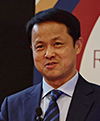

登录
|
注册
搜索
智库首页
决策热点
通知公告
会议集萃
智库论坛
智库专家
智库联盟
智库机构
智库成果
智库数据库

包思勤
副主任
研究员
个人简历
研究领域
教育背景
内部报告
学术论文
学术著作
研究项目
学术兼职
社会荣誉
研究成果
联系方式
所属机构
内蒙古发展研究中心（经济信息中心）
个人简历
1985年8月 参加工作以来，长期在自治区政府研究机构从事政策研究和经济理论研究，主持和参与了大量重大课题研究工作，参与自治区重大规划和政策的制定工作。
研究领域
宏观经济、产业经济、区域经济
教育背景
1985年7月 毕业于内蒙古财经学院。
内部报告
[1] 陈巴尔虎旗“三牧”扶持政策调研报告
[2] 关于我区牧民收入问题的调查与思考
[3] 2009年内蒙古经济发展趋势与对策研究
[4] 内蒙古自治区改革开放30周年回顾与前瞻
[5] 继续解放思想，深化改革开放，促进科学发展，提前走进前列——关于广东省新一轮解放思想学习讨论活..
查看更多>> 一共9篇文章
学术论文
[1] 陈巴尔虎旗“三牧”扶持政策调研报告
[2] 关于我区牧民收入问题的调查与思考
[3] 2009年内蒙古经济发展趋势与对策研究
[4] 内蒙古自治区改革开放30周年回顾与前瞻
[5] 继续解放思想，深化改革开放，促进科学发展，提前走进前列——关于广东省新一轮解放思想学习讨论活..
查看更多>> 一共9篇文章
学术著作
[1] 陈巴尔虎旗“三牧”扶持政策调研报告
[2] 关于我区牧民收入问题的调查与思考
[3] 2009年内蒙古经济发展趋势与对策研究
[4] 内蒙古自治区改革开放30周年回顾与前瞻
[5] 继续解放思想，深化改革开放，促进科学发展，提前走进前列——关于广东省新一轮解放思想学习讨论活..
查看更多>> 一共9篇文章
研究项目
[1] 陈巴尔虎旗“三牧”扶持政策调研报告
[2] 关于我区牧民收入问题的调查与思考
[3] 2009年内蒙古经济发展趋势与对策研究
[4] 内蒙古自治区改革开放30周年回顾与前瞻
[5] 继续解放思想，深化改革开放，促进科学发展，提前走进前列——关于广东省新一轮解放思想学习讨论活..
查看更多>> 一共9篇文章
学术兼职
内蒙古大学客座教授、内蒙古党校研究生导师、
内蒙古社科联学术委员会委员、内蒙古经济学会副会长等。
社会荣誉
曾获得自治区哲学社会科学优秀成果政府奖一、二、三等奖、青年奖及中国发展研究奖三等奖。
研究成果
一、主持课题
近三年主持的主要课题：
自治区发改委2012年度重点课题《人均GDP1万美元的内蒙古》系列研究报告，2012年12月完成；
内蒙古科技厅立项课题《内蒙古低碳经济发展研究》，2013年6月完成；
自治区发展研究中心2013年度重点课题《内蒙古“8337”发展思路理论与实践》系列研究报告，2013年12月完成。
二、参与课题
自治区发改委2011年度重点课题《内蒙古“十一五”经济社会发展回顾与总结》、《内蒙古自治区资源型城市可持续发展研究报告》，2011年完成。
三、内部报告
主持并执笔完成《继续解放思想，深化改革开放，促进科学发展，提前走进前列关于广东省新一轮解放思想学习讨论活动的调查及启示》，上报自治区党委、政府，获时任自治区党委书记储波批示。
主持并执笔完成自治区发改委2008年度重点课题《内蒙古自治区改革开放30周年回顾与前瞻》，上报国家发改委和自治区党委、政府，刊载于内蒙古自治区人民政府办公厅《内部情况通报》2008年第86期。
主持并执笔完成自治区发展研究中心2008年度重点课题《2009年内蒙古经济发展趋势与对策研究》，上报自治区党委、政府，获时任自治区党委书记储波批示。
《关于我区牧民收入问题的调查与思考》（2009年）上报政府后，获自治区政府巴特尔主席和任亚平副主席的批示。
四、出版专著
[1] 《内蒙古：世纪之交的重大经济选择》（合著，主笔，1994年由内蒙古大学出版社出版，26万字）；
[2] 《内蒙古经济增长方式：从粗放到集约》（合著，担任执行副主编、主笔，2000年由中国计划出版社出版，20万字）；
[3] 《内蒙古经济结构的战略性调整》（合著，担任执行副主编、主笔，2003年由内蒙古人民出版社出版，30万字，）；
[4] 《内蒙古经济研究与评论》（专著，2008年由内蒙古人民出版社出版，36万字）；
[5] 《人均GDP1万美元的内蒙古》（主编，课题主持人，2013年由内蒙古大学出版社出版,15万字）；
[6] 《内蒙古“8337”发展思路理论与实践》（合著，课题主持人，2013年12月由内蒙古大学出版社出版，46 万字）。
联系方式
bsq7858@163.com
 微信公众号
微信公众号